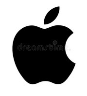
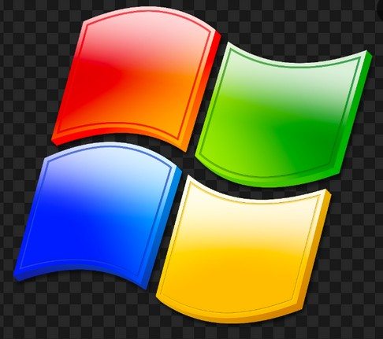

<h1>My top 5 Favorite Websites</h1>
<!-- Write your code below -->
    <ol>
        <li><a href="https://www.jw.org" draggable="true">JW.org's Home Page<br/></a></li>
        <li><a href="https://blackfish2012.synology.me" draggable="true">My Work Profile<br/></a></li>
        <li><a href="http://www.amazon.com" draggable="true">Amazon<br/></a></li>
        <li><a href="http://www.apple.com" draggable="true">Apple's main page<br/></a></li>
        <li><a href="http://www.microsoft.com" draggable="true">Microsoft Windows' site<br/></a></li>
        
    </ol>
    


    